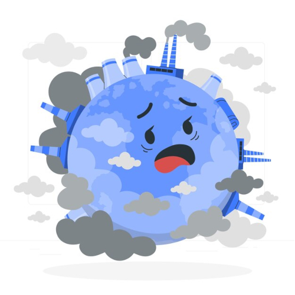
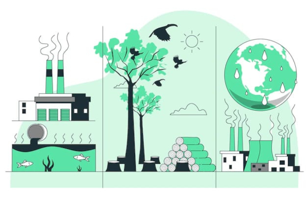
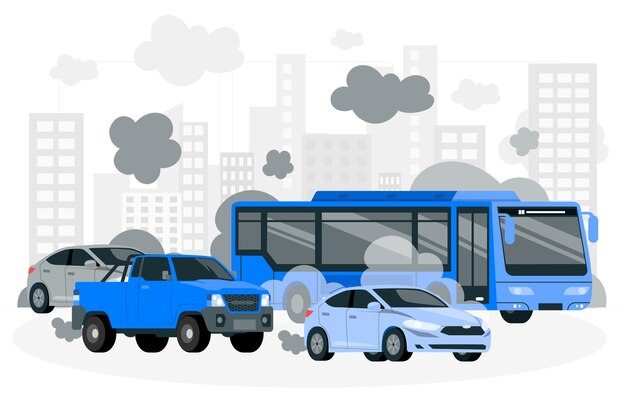
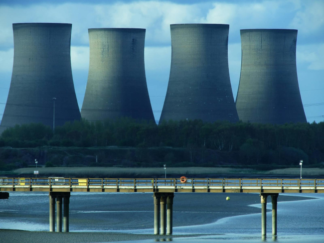
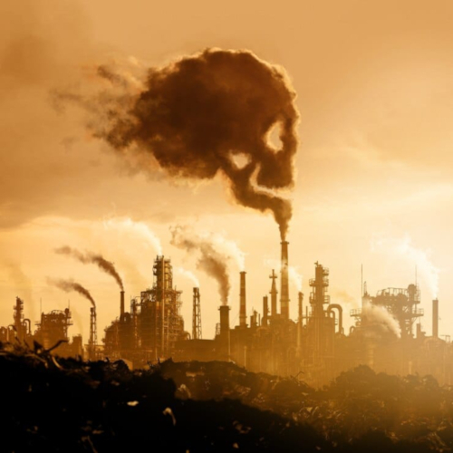
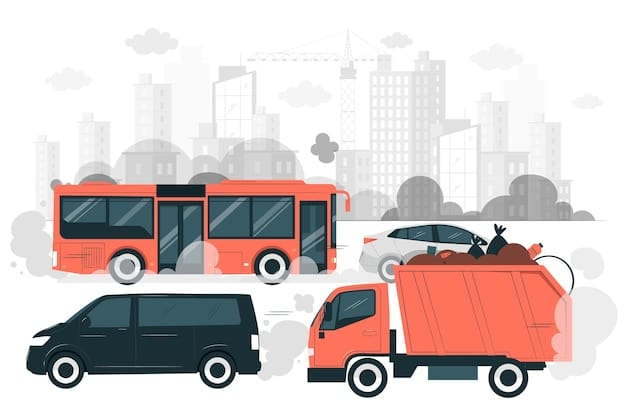
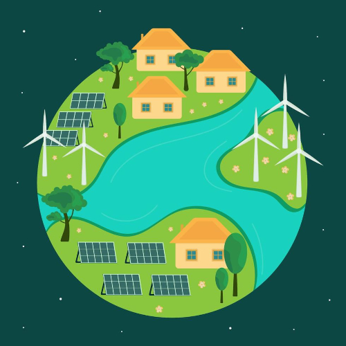

Poluição
Poluição de CO² no Brasil: um problema global com desafios locais A poluição por dióxido de carbono (CO²) é uma das principais responsáveis pelo agravamento das mudanças climáticas, e o Brasil, embora tenha peculiaridades em sua matriz energética e no uso da terra, não está isento de responsabilidades. Apesar de possuir uma matriz energética considerada limpa, o país enfrenta desafios crescentes com emissões relacionadas ao desmatamento, agricultura e transporte. A seguir o grupo Ambienta+ mostra uma análise detalhada sobre a situação da poluição de CO² no Brasil, suas causas, impactos e soluções, enriquecida por citações de especialistas no tema.
Contexto global e o papel do Brasil
(Ilustração do planeta incomodado com a poluição)
O CO² é o principal gás de efeito estufa (GEE) produzido por atividades humanas, representando cerca de 74% das emissões globais de GEE. O Brasil, embora seja o sétimo maior emissor global, possui uma característica única: ao contrário de países industrializados, cerca de 44% das emissões brasileiras estão ligadas ao desmatamento e mudanças no uso da terra.
Como destacou Carlos Nobre, climatologista e membro da Academia Brasileira de Ciências: O Brasil tem uma posição paradoxal. É um dos maiores emissores de CO² do mundo, mas também tem o maior potencial para reverter suas emissões por meio da conservação e restauração florestal.
Principais fontes de emissão de CO² no Brasil
(Ilustração das fontes de emissão do CO²)
Mudanças no uso da terra e desmatamento (44%)
O desmatamento, especialmente na Amazônia e no Cerrado, é a maior fonte de emissões de CO² no Brasil. A destruição de florestas libera o carbono armazenado em árvores e no solo.
Em 2021, o Brasil emitiu aproximadamente 2,42 bilhões de toneladas de CO² equivalente, e cerca de metade dessas emissões veio do desmatamento.
Philip Fearnside, pesquisador do INPA, alerta: Cada hectare desmatado na Amazônia não só libera carbono, mas também reduz a capacidade do bioma de sequestrar CO² no futuro.
Setor de transporte (13%)
(Ilustração de automóveis emitindo CO²)
Apesar do uso do etanol, o setor de transporte é uma das principais fontes de emissões urbanas de CO², devido à predominância de veículos movidos a combustíveis fósseis.
O Brasil possui uma das maiores frotas de veículos do mundo, e o crescimento urbano desordenado dificulta a implantação de alternativas de transporte público.
Agricultura e pecuária (28%)
A agropecuária é uma grande fonte de emissões, tanto de metano (CH₄), proveniente da fermentação entérica em bovinos, quanto de CO², associado ao manejo do solo e queimadas.
O Brasil é o maior exportador mundial de carne bovina, e a expansão de pastagens está intimamente ligada ao desmatamento.
Indústria e energia (15%)
(Imagem de usinas nucleares)
Embora o Brasil tenha uma matriz energética relativamente limpa, com 83% da energia elétrica vinda de fontes renováveis, setores industriais ainda utilizam combustíveis fósseis, especialmente petróleo e gás natural.
A produção de cimento e siderurgia também contribui significativamente para as emissões de CO².
Impactos das emissões de CO²
(Imagem de fábricas emitindo CO²)
Climáticos
O Brasil enfrenta eventos climáticos extremos cada vez mais frequentes, como secas no Sudeste e enchentes no Norte e Nordeste, associados às mudanças climáticas exacerbadas pelas emissões de CO².
A redução na umidade da Amazônia, provocada pelo desmatamento, afeta o ciclo hídrico regional, prejudicando até mesmo a produção agrícola no Centro-Sul.
Christiana Figueres, ex-secretária da Convenção-Quadro da ONU sobre Mudança do Clima, afirmou: A destruição da Amazônia é um exemplo claro de como as emissões de CO² não respeitam fronteiras, impactando o clima em escala global.
Econômicos
As perdas econômicas causadas por eventos climáticos extremos no Brasil já ultrapassam bilhões de reais por ano, afetando setores como agricultura, energia e infraestrutura.
A pressão internacional por compromissos climáticos mais rigorosos pode levar a barreiras comerciais, especialmente para produtos associados ao desmatamento.
Sociais
Comunidades indígenas e populações tradicionais são as mais afetadas pela degradação ambiental, sofrendo deslocamento, perda de recursos e maior exposição a doenças.
O aumento das temperaturas médias afeta a saúde pública, ampliando casos de doenças respiratórias e cardiovasculares.
Respostas e desafios para redução de emissões
(Balança pesando a poluição e a natureza)
Conservação florestal
Fortalecimento de políticas públicas
Programas como o Plano de Prevenção e Controle do Desmatamento na Amazônia Legal (PPCDAm) demonstraram que é possível reduzir o desmatamento, como ocorreu entre 2004 e 2012.
Aumento das áreas protegidas
Expandir Terras Indígenas e Unidades de Conservação é essencial para preservar estoques de carbono.
Antonio Donato Nobre, cientista do INPE, destacou: "Restaurar áreas degradadas e investir em manejo sustentável pode transformar o Brasil em uma potência ambiental."
Reforma no setor de transporte
(Ilustração de automóveis emitindo CO²)
Mobilidade urbana
Incentivar o transporte público de baixa emissão, como metrôs e ônibus elétricos, pode reduzir as emissões urbanas.
Inovação tecnológica
A transição para veículos elétricos e o fortalecimento do uso de biocombustíveis, como o etanol, são passos importantes.
Transformação agrícola
Técnicas de baixa emissão
Adoção de sistemas de integração lavoura-pecuária-floresta (ILPF) e o plantio direto podem reduzir emissões no setor agropecuário.
Valorização da floresta em pé
Programas de pagamentos por serviços ambientais podem incentivar práticas sustentáveis entre produtores rurais.
Mudança na matriz energética
(Fontes de energia renovável)
Expansão de fontes renováveis
Investimentos em energia solar e eólica devem complementar a matriz hidrelétrica, especialmente em regiões como o Nordeste.
Eficiência energética
Modernizar processos industriais e promover a economia de energia podem reduzir emissões significativas.
Desafios globais e o papel do Brasil
Apesar de avanços pontuais, o Brasil enfrenta pressões domésticas e internacionais para melhorar sua governança climática. A meta de alcançar a neutralidade de carbono até 2050, anunciada em 2021, requer um alinhamento rigoroso de políticas públicas e ações privadas.
Al Gore, ex-vice-presidente dos EUA, ressaltou O Brasil tem um papel crucial na luta contra as mudanças climáticas. Sua capacidade de liderar depende de escolhas estratégicas que coloquem a sustentabilidade no centro do desenvolvimento.
Conclusão
A poluição por CO² no Brasil é um reflexo de escolhas históricas e desafios contemporâneos. A combinação de políticas públicas robustas, inovação tecnológica e conscientização social pode transformar o país em um modelo de desenvolvimento sustentável. Como disse Marina Silva, ex-ministra do Meio Ambiente: "Não é apenas uma questão de reduzir emissões. É sobre repensar nosso modelo de sociedade, colocando o meio ambiente como o eixo central de nossas ações."
O futuro climático do Brasil e do mundo depende da capacidade de equilibrar progresso econômico com preservação ambiental, um desafio que só pode ser vencido com união e compromisso global.